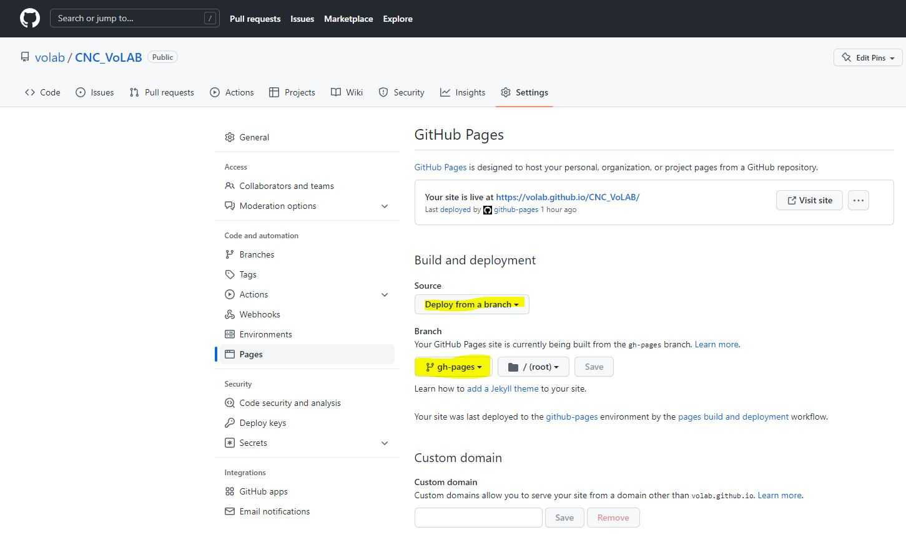
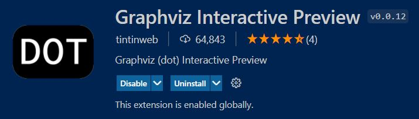
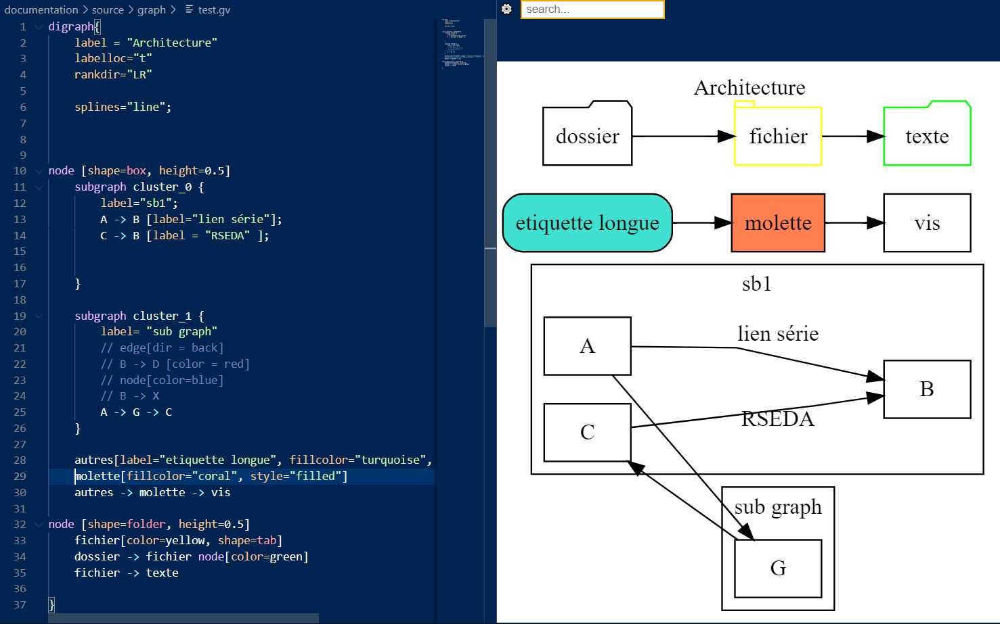

Sphinx*¶
- Auteur
J.Soranzo
- Date
Octobre 2019
- Societe
VoRoBoTics
- Entity
VoLAB
Sommaire
Sphinx pour la documentation¶

Voici mon utilisation de Sphinx !
Pourquoi ?¶
J’ai longtemps cherché un bon outil de documentation.
Quels sont mes critéres ?
A compléter.
Doc-O-Matic¶
Je le met ici mais je créerai un article plus tard quand j’aurai regardé de plus près
Oui mais non parce que c’est payant ! Même la version de base.
Au VoLAB¶
Globalement, on utilise github-pages dont l’abréviation est gh-pages
Méthode Pierre: voir sur son journal de manip 5
Que je compléterais par:
Créer le répertoire du projet
Créer à l’intérieur un répertoire “projet” et un autre “webdoc”
Dans projet créer _01-userDoc se placer dedans pour lancer sphinx-quickstart
Selon qu’on est sous Linux ou sous Windwos on peut effacer un des 2 make (make.bat pour Windwos)
De même que dans son chapitre Installer Préparation de l’arborescence, il faut se déplacer dans
projet et faire un git init
Note
sphinx-quickstart crée automatiquement le répertoire source
Commencer le boulot après…
Retouches de conf.py:
master_doc = 'index'
exclude_patterns = ['_build', 'Thumbs.db', '.DS_Store']
html_theme = 'nature'
html_theme_options = {
"body_max_width" : "70%"
}
Retouches de index.rst
Si toctree il y a (ou doit y avoir):
.. toctree::
:maxdepth: 2
:caption: Articles:
:titlesonly:
Supprimer : * :ref:`modindex` (on fait pas du Python ;-)
Mise en places des gh-pages (précisions)¶
Au premier push du projet, git demande de faire –up-stream origine uri.
Dans le dossier html avant le git clone de l’étape 8 on peut effacer le contenu du dossier (puisqu’on le génère avec un make html)
Le commentaire associé à la commande:
git symbolic-ref HEAD refs/heads/gh-pages
est très très important : puis on bascule automatiquement sur cette nouvelle branche
C’est à l’étape 9.4 qu’on crée la branche distante:
git push origin gh-pages
A partir de cette étape, on peut activer les pages sur gihub, dans setting/pages.
{kind=link}
css pas dans gh-pages¶
Mettre de le fichier .nojekyll dans le répertoire source et pas dans le répertoire html ;-)
Le 17/09/2022, en créant la doc de la CNC, je crois qu’il est nécessaire aussi dans le dossier html
Ce fichier est utilisé par make html
git clone après un crash¶
Autre soucis après un crash disque ne pas faire un git clone le_lien_github mais faire
git clone le_liengithub . le point est très important.
Dans sa doc Pierre, à l’étape 8, fait :
git clone [url_copiée_depuis_GitHub] html
Avertissement
Préciser le répertoire de destination dans la commande git clone permet de changer le nom de l’arborescence distante.
Préciser le répertoire de destination dans la commande git clone permet de changer le nom de l’arborescence distante.
Intégrer un fichier csv¶
.. csv-table:: Legende
:file: fichier.csv
:header-rows: 1
make file automatique voir site webdevdesigner.com 7 excel to csv n ligne de commande
Intégrer un svg¶
Sphinx supporte les svg mais lors de la génération du pdf cela coince. Donc plutôt que d’essayer de faire des conditions avec des directives autant tout mettre tout de suite en png.
Et pour qu’ils soient à jour l’idée est d’ajouter au fichier make.bat (sous Linux c’est le ficher Makefile) la commande Inkscape qui les génère:
set /p rep="Generer les fichiers externe ? o/n "
if "%rep%" == "n" goto extFilesUpToDate
inkscape --export-type=png specSoft\images\diagramSeqBoot.svg
inkscape --export-type=png verification\images\strapDeConf.svg
L’avantage du Makefile est qu’on peut se passer de la question Generer les fichiers externe ?
Intégrer du Graphviz ou plantUML¶
A ajouter au config.py:
extensions = [ 'sphinx.ext.graphviz', 'sphinxcontrib.plantuml' ]
plantuml = 'java -jar c:/plantuml/plantuml.jar'
graphviz_output_format = "svg"
plantuml_output_format = "svg_obj"
Puis dans le code:
.. graphviz:: graphviz/config4Access.gv
ou
.. uml:: graphviz/config4json.wsd
Utiliser sur le projet Electrical Power Stip IoT.
Voir aussi : plantUML dans C++
Graphviz¶
Graphiz interactiv preview dans visual Studio Code : pas de touche de rac mais ctrl+shift+p et cherche Graphviz interactive preview. L’extension est :
{kind=link}
site officiel de GraphViz 9 La doc est en ligne.
Petite astuce dans la doc allez au chapitre attributs 8, la Gallery d’exemples peut être aussi très utile.
{kind=link}
Le code:
digraph{
label = "Architecture"
labelloc="t"
rankdir="LR"
splines="line";
node [shape=box, height=0.5]
subgraph cluster_0 {
label="sb1";
A -> B [label="lien série"];
C -> B [label = "RSEDA" ];
}
subgraph cluster_1 {
label= "sub graph"
// edge[dir = back]
// B -> D [color = red]
// node[color=blue]
// B -> X
A -> G -> C
}
autres[label="etiquette longue", fillcolor="turquoise", style="rounded,filled"]
molette[fillcolor="coral", style="filled"]
autres -> molette -> vis
node [shape=folder, height=0.5]
fichier[color=yellow, shape=tab]
dossier -> fichier node[color=green]
fichier -> texte[dir="both", arrowhead="olbox", arrowtail="box"]
}
Avertissement
Ce qui est en bas dans le texte est en haut dans le graphique.
Cela donne:
Astuce images dans une table (list-table)¶
Utiliser dans notes Blender.rst:
.. |im1| image:: images/eveeReflexionAvec.jpg
:width: 300 px
.. |im2| image:: images/eveeReflexionSans.jpg
:width: 300 px
.. list-table::
:widths: 30 30
:header-rows: 1
* - Avec reflections
- Sans
* - |im1|
- |im2|
Les liens¶
Liens externes locaux (fichier word, pdf…)¶
Exemple vers un fichier pdf stocké dans la même arborescence. Externe en ce sens que ce ne sont pas des fichier rst
On peut utiliser le role :download:
Exemple doc pdf sphinx
Autre utilisation avec un word
Liens internes locaux (lien vers fichier rst)¶
Lien simple dans le même fichier vers une section nommé du fichier css pas dans gh-pages
`nom_de_la_section`_
Liens vers un fichier .rst de la même arbo directive :ref: Lien vers un point en particulier dans un fichier de l’arbo directive :ref:
.. _ref_lien:
usage : :ref:`ref-lien`
ou :ref:`nom_a_afficher<rel_lien>`
Attention le _ dans la définition est obligatoire mais pas dans l'utilisation
Astuce : si la définition précède un titre pas besoin de nom_a_afficher
Voir aide officielle ref 11
Lien externe distant (url internet)¶
exemple url externe au système documentaire:
`link_desc`_
.. _`link_desc` : url
Themes¶
Recherche d’un thème avec barre de navigation fixe
Note
Ce serait l’option stickysidebar bar https://www.sphinx-doc.org/en/master/usage/theming.html au moins pour le theme classic
Le pb est que les options ne sont pas commune d’un thème à l’autre.
Nouveau en 2023¶
testés¶
PSphinxTheme
Avertissement
Dans les premier ! Avec sidebar rétractable 5 colorations fournies. Theme difficile à installer sous Windows !!! Erreur dans setup.py (os supported arch Linux ! )
guzzle
Ne support pas body_max_width dommage

cloud
Plutôt pas mal, beaucoup d’option mais je trouve l’écartement entre les lignes de mon header
- Auteur
J.Soranzo
- Date
Octobre 2019
- Societe
VoLAB
- Entity
VoRoBoTics
trop important ! Même en passant bodylineheight de 1.5 à 1em directement dans le fichier de configuration du theme:
Python38-32\Lib\site-packages\cloud_sptheme\themes\cloud\theme.conf

Installaton par pip install du fichier wheels fourni sur le site.
Theme possédant un site très complet. Existe en greencloud, redcloud mais solarcloud, magenta_cloud ne fonctionnent pas pourtant les 2 fichiers se ressemblent beaucoup
Permet de régler la largeur avec :
html_theme_options = {
'max_width' : '70%'
}
Pour mettre la même couleur entre le fond et les bordures: 'borderless_decor' : 'true'
La config du theme est dans:
C:\Program Files\Python37\Lib\site-packages\cloud_sptheme\themes\cloud\theme.conf
murray
Trop blanc mais intéressant pour son menu repliable.
Astropy
S’install avec un fichier wheel. pip install astropy_sphinx_theme-1.1-py2.py3-none-any.whl Source sur github
Nécessite quelque retouche dans la barre mais mériterait de regénérer un wheel modifié pour le logo
...\Python\Python38-32\Lib\site-packages\astropy_sphinx_theme\bootstrap-astropy\static
astropy_logo_32.png
et dans layout.html changer le lien vers une autre destination
A partir de la ligne 530 du css, il y a la largeur du doc
div.body {
background-color: #ffffff;
padding: 0 0 0px 20px;
min-width: 450px;
max-width: 2000px;
}
div.bodywrapper {
margin: 0 0 0 230px;
max-width: 80em;
}
A tester¶
catalystcloud
rtd Read The Doc https://sphinx-rtd-theme.readthedocs.io/en/stable/installing.html
Bizstyle ou similaire allanc-sphinx : grégoire
Sphinx to pdf¶
make latexpdf
mais il faut installer basic-miktex-2.9.7216-x64.exe et perl.exe
Essais du 17/06/2020: problème d’encodage pour latex. Installation de nombreuses dépendances latex en automatique
Petits trucs¶
Autres astuces difficilement classable¶
7/3/20 J’ai trouvé ce site ou plutot ce MOOT de l’université de Grenoble :
Weblinks¶
- 1
- 2
- 3
- 4
- 5
https://poltergeist42.github.io/JDM/Documentation_Automatique.html
- 6
https://github.blog/2009-12-29-bypassing-jekyll-on-github-pages/
- 7
https://webdevdesigner.com/q/convert-xls-to-csv-on-command-line-21100/
- 8
- 9
- 10
http://www.sphinx-doc.org/en/master/usage/restructuredtext/roles.html#role-download
- 11
https://www.sphinx-doc.org/en/master/usage/restructuredtext/roles.html#ref-role
- 12
- 13
- 14
https://sphinx-nefertiti.readthedocs.io/en/latest/index.html
- 15
- 16